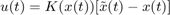
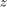

Demonstration of extended time-delayed feedback control on excited pendulum
Author: Jan Sieber
We consider a parametrically excited pendulum. The pendulum is driven at a frequency close to its 1:2 resonance. At some forcing amplitude the trivial (hanging-down) solution becomes unstable and a period-two oscillation around the hanging-down state branches off in a period doubling. For  this period-doubled branch is unstable with a single unstable Floquet multiplier larger than unity.
this period-doubled branch is unstable with a single unstable Floquet multiplier larger than unity.
Periodic orbits with an odd number of Floquet multipliers larger than one in periodically forced systems can usually not be stabilised with (extended) time-delayed feedback. The approach below circumvents this restriction by formulating the forcing as an autonomous Hopf normal form (Stuart-Landau) oscillator coupling into the pendulum equation (this is usually also done in an experimental implementation):
where (damping), (attraction rate of periodic orbit in auxilliary oscillator ) and . The control input is linear through . The extended time-delayed feedback control is of the form

where both, and have four components: , , and . In a practical experiment the above control would likely require two inputs: real-time torque control at the pivot of the pendulum and a a real-time modification of the (eg) actuator creating the periodic forcing.
The bifurcation diagram and the stability of the system with delay are computed using DDE-Biftool version 3.1, available from
https://sourceforge.net/projects/ddebiftool/files/dde_biftool_v3.1.zip/download
Contents
- Code
- Preparation: add path and define right-hand side
- Contruct bifurcation diagram
- Increase forcing oscillator amplitude to 1
- Increase forcing of pendulum
- Branch off at period doubling
- Plot bifurcation diagram
- Construct gains for control and compute stability for controlled periodic orbit
- Plot of gains K as constructed
- Illustration of spectrum for controlled system
- Zoom in
- How does the true x-dependent gain look like?
Code
Preparation: add path and define right-hand side
x is and the parameter set p is . Modify the path below to lead to the local ddebiftool folders.
clear close all addpath('../dde_biftool/ddebiftool'); addpath('../dde_biftool/ddebiftool_utilities'); damping=0.1; omega=1.8; c=0.1; pendulum=@(x,p,u)[... x(2,:);... -damping*x(2,:)-(1+p(1)*x(3,:)).*sin(x(1,:))+2*u;... c*p(2)*x(3,:)-omega*x(4,:)-c*x(3,:).*(x(3,:).^2+x(4,:).^2)+u;... omega*x(3,:)+c*p(2)*x(4,:)-c*x(4,:).*(x(3,:).^2+x(4,:).^2)+u]; funcs=set_funcs(... 'sys_rhs',@(xx,p)etdf_controlled_rhs(xx,p,pendulum),... 'sys_tau',@()[],... 'x_vectorized',true);
Contruct bifurcation diagram
Continue equilibria initially in and branch off at Hopf bifurcation at (, the forcing amplitue is 0 initially). Then continue the family of stable periodic orbits (which are trivial in|theta|: x(1)=x(2)=0) until .
[stbr,suc]=SetupStst(funcs,'x',[0;0;0;0],'parameter',[0,-0.2],... 'contpar',2,'dir',2,'step',1e-1); display(suc) stbr.method.continuation.plot=0; stbr=br_contn(funcs,stbr,5); [nunst_stst,~,~,stbr.point]=GetStability(stbr,'funcs',funcs);
suc =
1
Increase forcing oscillator amplitude to 1
note that forcing enters the pendulum with prefactor p(1)
[oscillator_up,suc]=SetupPsol(funcs,stbr,find(nunst_stst==2,1,'first'),... 'radius',0.05,'max_bound',[2,1]); display(suc) oscillator_up.method.continuation.plot=0; oscillator_up=br_contn(funcs,oscillator_up,20);
suc =
1
BR_CONTN warning: boundary hit.
Increase forcing of pendulum
Now we vary , the forcing amplitude of the pendulum, increasing it from until we obseve a period doubling bifurcation (which occurs below ). The solution is still trivial in .
[trivial,suc]=ChangeBranchParameters(funcs,oscillator_up,... length(oscillator_up.point),'contpar',1,'dir',1,'step',0.1,'max_bound',[1,1]); display(suc) trivial=br_contn(funcs,trivial,100); [nunst_triv,~,~,trivial.point]=GetStability(trivial,'funcs',funcs,... 'exclude_trivial',true);
suc =
1
BR_CONTN warning: boundary hit.
Branch off at period doubling
The period doubling is subcritical such that the emerging period-two oscillation (corresponding to a swinging around the hanging-down position) is unstable. The swinging solution folds in a saddle-node bifurcation, becoming stable at some .
ind_branch=find(nunst_triv==1,1,'first'); [swing,suc]=DoublePsol(funcs,trivial,ind_branch,'max_step',[0,0.1],... 'max_bound',[1,trivial.point(ind_branch).parameter(1)+0.1],'radius',0.1); display(suc) swing=br_contn(funcs,swing,100); [nunst_swing,dom,~,swing.point]=GetStability(swing,'funcs',funcs,'exclude_trivial',true);
suc =
1
BR_CONTN warning: boundary hit.
Plot bifurcation diagram
x_triv=arrayfun(@(p)max(abs(p.profile(1,:))),trivial.point); p_triv=arrayfun(@(p)p.parameter(1),trivial.point); x_swing=arrayfun(@(p)max(p.profile(1,:)),swing.point); p_swing=arrayfun(@(p)p.parameter(1),swing.point); floq_swing=cell2mat(arrayfun(@(p)p.stability.mu,swing.point,'uniformoutput',false)); T_swing=[swing.point.period]; figure(1);clf; subplot(1,2,1); plot(p_triv,x_triv,'.-',p_swing,x_swing,'o-'); xlabel('p_1');ylabel('amplitude angle'); legend('hanging down','swinging'); title('Period-two oscillations') subplot(1,2,2); plot(abs(floq_swing),x_swing,'ko'); ylabel('swing amplitude');xlabel('modulus of Floquet multipliers'); title('Stability')
Construct gains for control and compute stability for controlled periodic orbit
The function etdf_control remeshes the time point mesh along the orbit (to discretize the short large near-impulse of feedback control with a finer mesh). Then it recomputes the orbit using the new mesh (with p_correc), and computes the gains using the asymptotic formula by Brunovsky'69. The gains are chosen such that the eigenvalues of are placed on a circle of radious .
The time of control input is the interval (controlled by optional parameter 't').
orbits=find(nunst_swing==1); % find unstable periodic orbits clear pcorrected spec gain epsilon=0.1; for i=length(orbits):-1:1 [pcorrected(i),spec(:,i),gain(:,i)]=etdf_control(pendulum,swing,... 'point',orbits(i),... 't',0,'delta',1e-4,'epsilon',epsilon,'rho',0.1,'n1',5,'n_change',5,'n0',10); end display(spec(1:3,:),'dominant eigenvalues of controlled system')
dominant eigenvalues of controlled system = Columns 1 through 4 1.0000 + 0.0000i 1.0000 + 0.0000i 1.0000 + 0.0000i 1.0000 + 0.0000i 0.8999 + 0.0197i 0.9027 + 0.0189i 0.9032 + 0.0187i 0.9033 + 0.0187i 0.8999 - 0.0197i 0.9027 - 0.0189i 0.9032 - 0.0187i 0.9033 - 0.0187i Columns 5 through 8 1.0000 + 0.0000i 1.0000 + 0.0000i 1.0000 + 0.0000i 1.0000 + 0.0000i 0.9034 + 0.0186i 0.9034 + 0.0186i 0.9034 + 0.0186i 0.9034 + 0.0186i 0.9034 - 0.0186i 0.9034 - 0.0186i 0.9034 - 0.0186i 0.9034 - 0.0186i Columns 9 through 10 1.0000 + 0.0000i 1.0000 + 0.0000i 0.9032 + 0.0187i 0.9026 + 0.0189i 0.9032 - 0.0187i 0.9026 - 0.0189i
Plot of gains K as constructed
figure(2);clf plot(x_swing(orbits),gain,'.-'); set(gca,'ylim',max(abs(gain(:)))*[-1,1],'xlim',[0,max(x_swing(orbits))]); legend('gain K_1','gain K_2','gain K_3','gain K_4'); xlabel('swing amplitude'); grid on
Illustration of spectrum for controlled system
for periodic orbit with amplitude near xmax=1
[~,ind]=min(abs(x_swing-1)); epsilon=0.1; [pt0,spec0,gain0,Ksmooth]=etdf_control(pendulum,swing,'point',ind,... 't',0,'delta',5e-4,'epsilon',epsilon,'rho',0.1);
figure(2);clf
deco={'markersize',10};
plot(cosd(0:360),sind(0:360),real(spec0),imag(spec0),'.',deco{:});
grid on
xlabel('Re \lambda');
ylabel('Im \lambda');
title(sprintf('Spectrum of controlled system for p_1=%g',pt0.parameter(1)));
drawnow
Zoom in
hold on plot(1-epsilon/2+epsilon/2*cosd(0:360),epsilon/2*sind(0:360)); set(gca,'xlim',[1-epsilon*1.1,1+epsilon/2],'ylim',epsilon*0.6*[-1,1]);
How does the true x-dependent gain look like?
The control is only applied in a small area of size delta and scaled by 1/delta.
figure(3);clf subplot(1,2,1); K=Ksmooth(pt0.profile); ind=find(all(abs(K)<1e-4),1,'first')+2; plot(pt0.mesh(1:ind)*pt0.period,K(:,1:ind),'.-'); grid on; xlabel('time'); ylabel('\Delta_\delta(x(t)) K(x(t))'); subplot(1,2,2); ind=find(all(abs(K)<1e-4),1,'last')-2; plot(pt0.mesh(ind:end)*pt0.period,K(:,ind:end),'.-'); grid on; xlabel('time'); ylabel('\Delta_\delta(x(t)) K(x(t))');